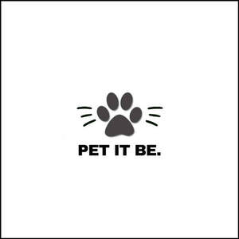

Trade Mark Journal No.2025/037 12 September 2025
UK00004256990 30 August 2025 (3,18,28,31)

- Class 3
- Shampoos for pets; Pets (Shampoos for -).
- Class 18
- Collars for cats; Raincoats for pet dogs; Coats for cats; Coats for dogs; Cat collars; Dog leashes; Dog collars; Clothing for dogs; Leashes for animals; Collars for pets; Dog coats; Collars for animals; Collars of animals; Dog parkas; Cat o' nine tails; Rawhide chews for dogs; Dog shoes; Animal leashes; Dog bellybands; Dog clothing.
- Class 28
- Toys for dogs; Toys for cats; Toy dogs; Dog toys; Toys for pet animals; Imitation bones being toys for dogs; Toys for pets; Toys and playthings for pet animals; Toys for domestic pets; Snuffle mats being dog toys.
- Class 31
- Dogs; Cats; Litter for dogs; Litter for cats; Animal litter for cats; Pet food for dogs; Food for cats; Biscuits for dogs; Food for dogs; Foodstuffs for cats; Bones for dogs; Foodstuffs for dogs; Beverages for cats; Cat litters; Pet animals; Beverages for dogs; Foodstuff for dogs; Cat litter and litter for small animals; Cat litter; Cat biscuits; Chewing bones for dogs; Litter for animals; Dog biscuits; Biscuits (Dog -); Pet birds; Food for racing dogs; Cat food; Dog foods; Edible silvervine powder for pet cats; Dog food; Edible chews for dogs; Foodstuffs for pet animals; Canned foodstuffs for dogs; Canned foods for dogs; Canned foodstuffs for cats; Food preparations for cats; Biscuits for puppies; Food preparations for dogs; Pet food for birds; Milk for use as foodstuffs for dogs; Litter for domestic animals; Biscuits for animals; Foodstuffs for puppies; Kitty litter; Litter for small animals; Digestible chewing bones for dogs; Cat treats [edible]; Dog treats [edible]; Edible dog treats; Foods containing chicken for feeding cats; Foods containing chicken for feeding dogs; Bark for use as animal litter; Foods flavoured with liver for feeding cats; Foods in the form of rings for feeding to cats; Foods containing liver for feeding cats; Foods containing liver for feeding dogs; Bedding and litter for animals; Foods flavoured with chicken for feeding cats; Foods in the form of rings for feeding to dogs; Menagerie animals.
Faizan Ahmed